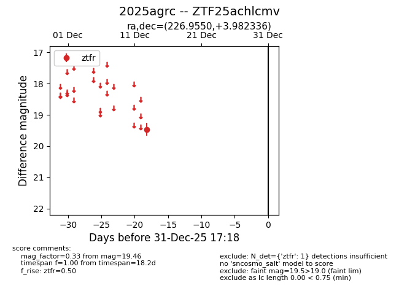
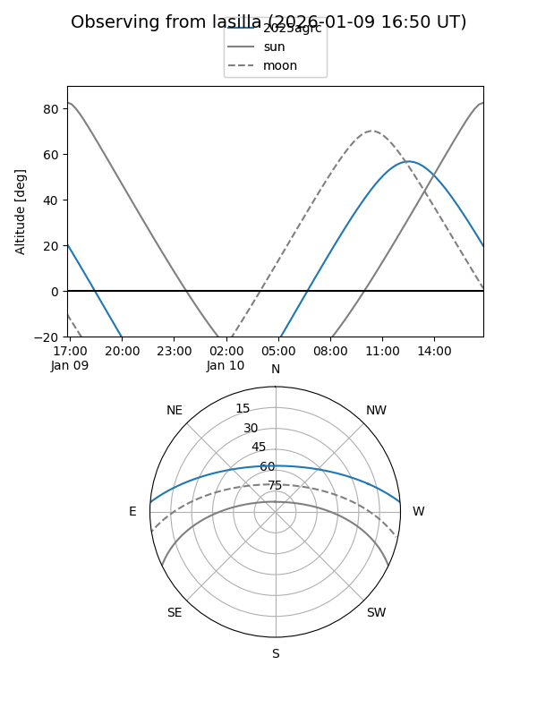
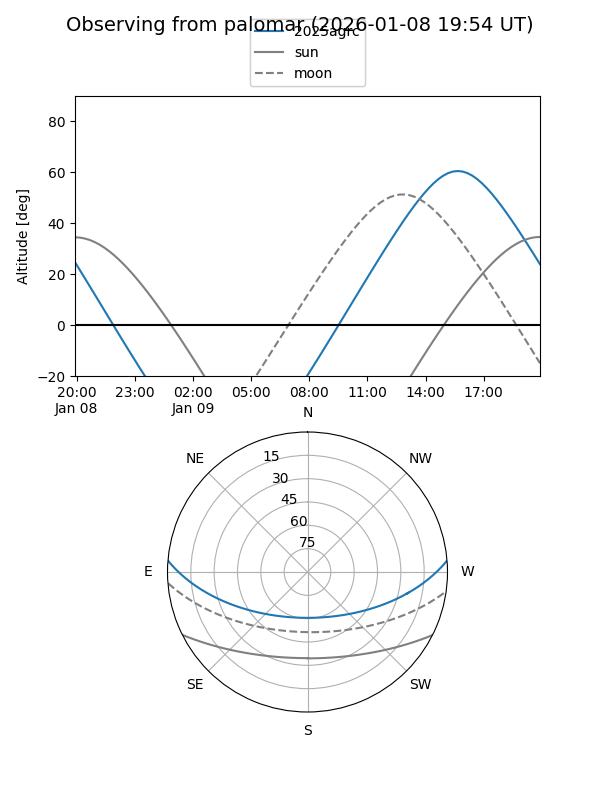

2025agrc
Target 2025agrc at 2025-12-31 16:59
Aliases and brokers:
FINK:
Lasair:
ALeRCE:
TNS:
YSE:
alt names
ZTF25achlcmv (ztf,fink_ztf)
2025agrc (tns,yse)
Coordinates:
equatorial (ra, dec) = 226.9550,+3.98234
equatorial (HMS+DMS) = 15:07:49.20,+03:58:56.41
galactic (l, b) = (3.5493,+50.07552)
Flags:
Photometry:
last ztfr=19.46
1 ztfr detections
Lightcurve

Visibility


Additional plots